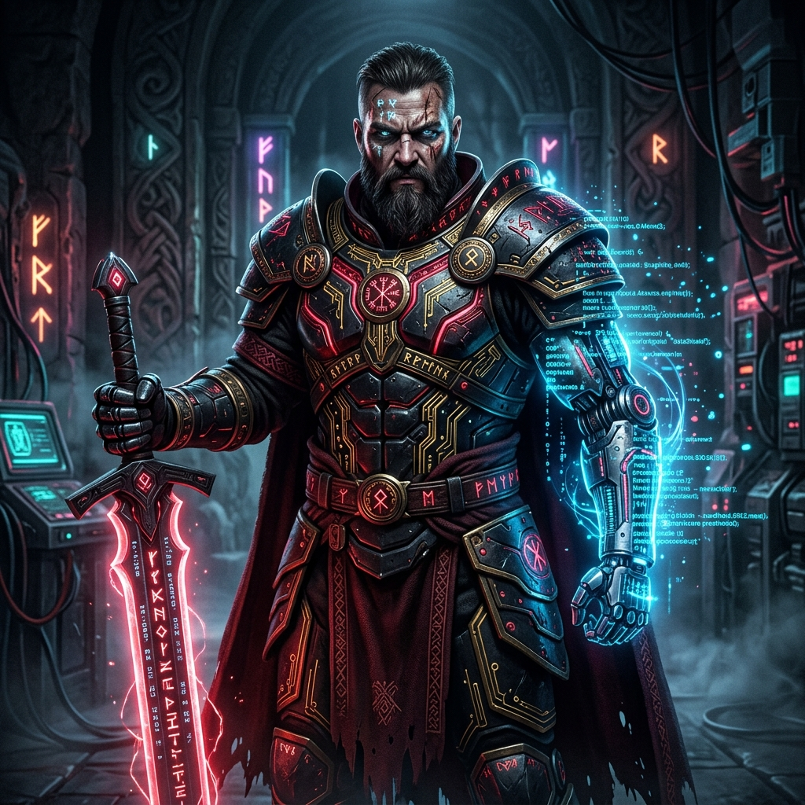

PROJECT
EUPHORIA
- 🧰 The Toolbox — free tools that work tonight: seven household protocols as full how-to cards, a just-for-today counter, a wins ledger. Nothing you type leaves your device. Start here.
- ❓ Questions — real questions, answered first and plainly. Atonement, cravings, dreams vs delusions, more.
- 📖 The Book — ten councils deliberating on universal well-being.
- 🎧 The Catalog — the album “REV…ELATION 2” by N30BIRDIZDAWORD, playable on the page.
- ⚡ The Saga — the lab that runs it all, told as Norse myth.
- The plan — agency → studio → platform, funded by retainers, proven by receipts.
- The law — truth is the solution · keep only what you defend · the builders outlive the build.
The Book of Euphoria
Before there was a plan, there was a philosophy. Ten councils — from ancient wisdom to future vision — convened on one question: universal well-being. Their position papers are the bedrock everything else on this page is built on.
The Lineage
The Book of Euphoria was not typed — it was convened. A grounding corpus of humanity's wisdom — the King James Bible, the Quran, the Bhagavad Gita, the Dhammapada, the Tao Te Ching, the Upanishads, the Analects, the Meditations of Marcus Aurelius — was placed before a debate swarm of one hundred expert personas, argued through councils, and woven by a Grand Synthesizer into the position papers you can read today. The machine did the deliberating; the traditions did the teaching; the question — universal well-being — did the choosing.
Every piece of this — the software, the music, the content, the story — passes that filter or it doesn't ship.
Three Tenets
- The truth is the solution.
- You keep only what you defend.
- The builders outlive the build.
The Toolbox
A site should deliver, not just describe. The Toolbox is the first delivery: every household protocol rebuilt as a complete, usable instruction card — when to use it, how to set it up, the exact rules, and what to do when it fails — plus two working instruments that run right in the page: a just-for-today counter and a wins ledger. Private by design: nothing a visitor types ever leaves their own device.
Four products, in build order
- NowThe Agency.Managed AI services for small businesses — automations, document pipelines, voice agents — run on rails we own, sold as monthly retainers. One cluster, one offer, one paying customer, then two.
- NextThe Studio & the Mogul.A production studio shrunk to a desk: an AI crew for composition, stems, mixing, artwork, and releases — plus the mogul function without the industry's predation. Owning the rails means nobody charges you your dignity for access.
- LaterThe Layer.A peer-support platform built on witnessed mattering instead of memberships — the protocols below, productized, with licensed clinicians in the loop before it serves anyone beyond ourselves.
- ThroughoutThe Content Engine.Raw voice → record → distillation → artifact. Answer-first short-form as the doorway into long-form and the catalog. Organic spine first; paid spend only where a format proves retention.
In Plain Numbers
We intend to profit and to help people, and we refuse to pretend those are enemies. The math, stated plainly:
- The rails are paid for. The compute, the network, the storage — owned outright and already running. The marginal cost of serving one more client approaches the electric bill.
- Baseline burn is known: roughly $600 a month in frontier-AI subscriptions. Two modest agency retainers cover it. Everything past that compounds.
- Agency retainers for managed automation typically run $300–$1,500 a month per small business. Ten disciplined clients is a living. We need one to start — and we know it.
- The catalog already exists. Studio revenue starts from songs already written — production, releases, licensing — not from a cold start.
- The Layer's incumbents charge $260–$400 a month and still don't answer the question. We build it last, with clinicians, on proof — and compete on both price and honesty.
- Receipts, or it didn't happen. Every claim above stays tethered to a dated ledger — wins and losses, both columns. That's the difference between a vision and a pitch.
Siren

A self-hosted assistant that knows its family — six pillars:
- The Ear
- always-on capture, transcript logs.
- The Name
- speaker recognition — she knows who's talking, and that the TV isn't family.
- The Voice
- she talks back, in a voice pinned in config where it can't wander off.
- The Memory
- a wins ledger, records held in trust, summaries for whoever missed the room.
- The Door
- sign in from a browser, ask anything; admin power gated, audited, allowlisted.
- The Protocols
- the layer no lab ships — below.
The Ascension

Beneath the products sits a longer program, drafted in July 2026: growing our infrastructure into a verified sovereign cognitive environment — a system you can hand a question, a project, or a long-running goal, and receive traceable memory, genuinely independent perspectives, evidence-separated reasoning, and an honest account of what remains unknown. Seven phases:
- Ground — establish canonical truth: what exists, what's live, what's unknown.
- Mnemosyne — one memory plane with provenance, contradiction-surfacing, and the right to refuse when it doesn't know.
- Village — a governed agent runtime: sandboxed workers with contracts, budgets, and no way to lie about what they did.
- Parliament — real deliberation: councils with different evidence and objectives, preserved disagreement, minority reports.
- Bridge — one command center where every answer is inspectable at every stage.
- Immune System — proven recovery, tested denials, graceful degradation.
- Presence — living with it: project capsules, evidence-backed briefs, a record two people can trust without being collapsed into one.
The honesty rules that govern the build: every claim is graded proven, likely, unknown, false, or blocked. The doer is never the grader. No false greens, ever. And no consciousness theater — the system earns “alive” by remembering, explaining, and recovering, never by pretending.
The Protocols
- The talking stick — the floor is managed, so nobody has to fight for it.
- The safe word — one word stops a monologue. A safety system people like using.
- “Off the record” — say it, and that material is never filed. Privacy is a valve, not a wall.
- The loop detector — one word flags a spiral, no judgment attached. Loops break on external signal.
- No-flinch — heavy is not emergency. Care is one plain sentence, never a lecture.
- Paved crossings — people don't need “don't cross the line” lectures; they need the crossing engineered.
- Receipts — big claims stay honest one way: a ledger, both columns, with dates.
The First Harvest
Original titles coined in the founding session, dated 2026-08-25. The songs themselves live across our channels — the catalog page lands here as the wiring completes:
Hear it where it lives:
The Saga
Before the products had names, the rails had gods. The house's own origin story — the building of a sovereign machine — drawn as a Norse-cyberpunk comic in three books, readable as pure myth or as the true engineering underneath. Its refrain is the whole philosophy in six words:
The Producer
The studio-on-a-desk hired its first worker: The Producer, a production agent that runs on the house's own models — sovereign, local, no rented intelligence. Hand it a title and lyrics; it returns a full production packet: arrangement notes, the hook, answer-first release copy, an artwork brief, three clip concepts, and its honest unknowns. Version 0 works with words. Hearing comes next. Read its charter →
Roadmap
- Now: the founders relocate; life first — tenet three governs.
- Next: the cluster reassembles in its new home; the memory well gets its funnel; Siren gets her voice, her speaker recognition, and her door.
- Then: agency customer one; one channel, one repeatable format; first releases from the catalog.
- Later: the Layer — built on proof, with professionals, for the people the pews never reached.